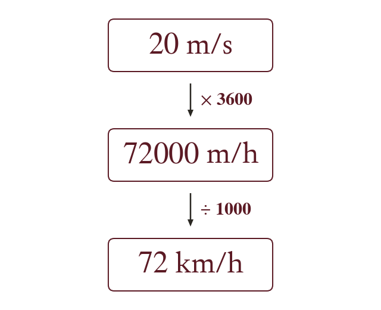
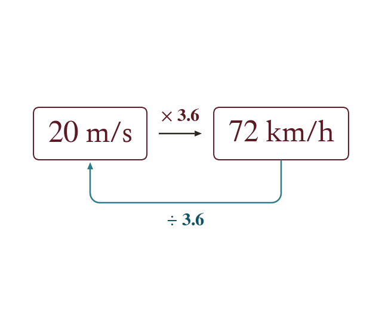
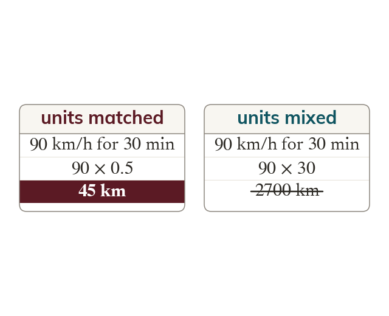
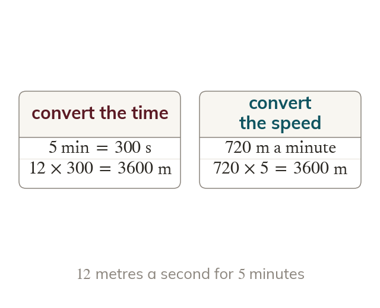

One part at a time
A compound unit converts by converting each part in turn. The unit on the bottom converts the opposite way to the one on top.
A sprinter at m/s and a car at km/h are going at exactly the same speed. Today is how to see that. A compound unit converts one part at a time.
Work down the page at your own pace. Write every answer in your book first, then click to check it.
Read each card, then follow the worked examples one step at a time.

A compound unit converts by converting each part in turn. The unit on the bottom converts the opposite way to the one on top.

Together those steps multiply by
So m/s to km/h is × and km/h to m/s is ÷
Pick an answer. If it's wrong, the feedback tells you which mistake it was.
Read each card, then follow the worked examples one step at a time.

Every quantity must be in the units the answer needs before any calculation starts. Mixed units give a wrong answer that looks right.

Convert the quantity that makes the arithmetic easiest. The answer's own units decide what everything else must become.
Pick an answer. If it's wrong, the feedback tells you which mistake it was.
Finished? Next lesson: 9.10.3 Pressure and Rates.
For each skill, tap the one that is true for you today. Your Revise pages start with anything you mark Not yet.
Your ratings are saved on this device only.
Log in, then search for a code to practise that skill.
Videos, worksheets and more on each part of this lesson.